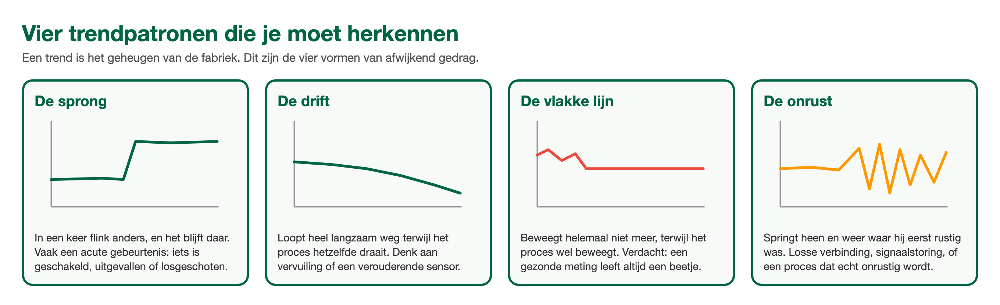

ANA Module 5
1.1 Leerdoelen
Na het volgen van dit hoofdstuk kun je:
- Uitleggen wat een storing is en het verschil benoemen tussen een acute en een sluipende storing
- Beschrijven hoe je met je zintuigen een storing of een aankomende storing opmerkt
- Aan een trend zien of een meetwaarde afwijkend gedrag vertoont
- Een storing zo melden dat een ander er direct mee aan de slag kan
1.2 Wat is een storing?
Een storing is elk moment waarop een installatie of een deel ervan niet meer doet wat hij moet doen. Dat klinkt simpel, maar er zit een belangrijk onderscheid in:
- Acute storing. Het ging goed, en ineens niet meer. Een pomp valt uit, een zekering brandt door, een meetsignaal valt weg. Je kunt meestal een moment aanwijzen waarop het misging.
- Sluipende storing. Het gaat langzaam steeds minder goed. Een filter slibt in weken dicht, een sensor drijft langzaam weg van de echte waarde, een lager gaat steeds luider lopen. Niemand ziet een knal, maar wie oplet ziet het aankomen.
Denk aan een fietsband. Een klapband is een acute storing: het moment is onmiskenbaar. Een band die elke week een beetje zachter staat is een sluipende storing: je merkt het pas echt als je te laat bent, tenzij je af en toe even knijpt.
Sluipende storingen zijn in de industrie de gevaarlijkste van de twee. Ze geven geen alarm totdat ze acuut worden, vaak op het slechtste moment. Daarom is het herkennen van aankomende storingen een echte vakvaardigheid, en daar gaan de volgende paragrafen over.
🔍 Kennischeck: De aanwijzing van een temperatuurmeting staat elke ochtend iets hoger dan de dag ervoor, terwijl het proces hetzelfde draait. Wat is dit?
A) Een acute storing: de meting is kapot en moet direct vervangen worden
B) Een sluipende storing: het gaat langzaam steeds minder goed
C) Normaal gedrag: elke meting verandert nu eenmaal een beetje
D) Een bedieningsfout: iemand stelt de meting elke ochtend anders in
1.3 Signaleren met je zintuigen
Voordat er ook maar een meetinstrument aan te pas komt, heb jij al vier meetinstrumenten bij je: je ogen, je oren, je neus en je handen. Ervaren operators en monteurs lopen niet voor niets een vaste ronde door de installatie. Wat er anders is dan gisteren, dat valt op.
👀 Kijken
Lekkage, druppels of aanslag onder een koppeling. Een afwijkende kleur van het product of van een vlam. Een meter die tegen zijn aanslag staat. Trillende leidingen. IJsvorming op een plek waar dat niet hoort.
👂 Luisteren
Een pomp die anders klinkt dan normaal: brommen, ratelen, cavitatie (het geluid alsof er grind wordt meegepompt). Sissen van een klein lek. Een klepperend terugslagklepje.
👃 Ruiken
Een brandlucht van een oververhitte motor of kabel. Een productgeur op een plek waar je die normaal nooit ruikt: vaak het eerste teken van een lek.
✋ Voelen
Warmte van een lager of motorhuis, trilling in een leiding, een appendage die lauw is terwijl hij koud hoort te zijn. Altijd met de rug van je hand, en alleen waar dat veilig kan.
⚠️ Je zintuigen zijn signaleringsgereedschap, geen meetgereedschap. Ruik je iets vreemds of hoor je iets geks: ga niet zelf met je neus de installatie in, maar meld het en houd afstand. Bij twijfel over gas of damp geldt: weg ervan, melden, en het aan de meetapparatuur en de mensen met de juiste beschermingsmiddelen overlaten.
Op ronde: kijken, luisteren, ruiken en voelen wat er anders is dan gisteren.
1.4 Signaleren met metingen en trends
De installatie zelf meet ondertussen ook, dag en nacht. Elke meting die het besturingssysteem binnenkrijgt wordt opgeslagen. Zo'n opgeslagen verloop van een meetwaarde over de tijd heet een trend. Een trend is het geheugen van de fabriek: wat vandaag raar lijkt, kun je vergelijken met gisteren, vorige week of vorige maand.
In een trend herken je afwijkend gedrag vaak aan een van deze patronen:
- De sprong. De waarde verandert in een keer flink en blijft daar. Vaak een acute gebeurtenis: er is iets geschakeld, uitgevallen of losgeschoten.
- De drift. De waarde loopt heel langzaam weg terwijl het proces hetzelfde draait. Klassiek teken van vervuiling of een sensor die veroudert: een sluipende storing in beeld.
- De vlakke lijn. De waarde beweegt helemaal niet meer, terwijl het proces wel beweegt. Verdacht: een gezonde meting leeft altijd een beetje. Grote kans dat de meting bevroren is of het signaal is weggevallen.
- De onrust. De waarde springt heen en weer waar hij eerst rustig was. Denk aan een loszittende verbinding, storing op het signaal, of een proces dat echt onrustig wordt.

De vier trendpatronen. Een gezonde meting leeft altijd een beetje.
Alarmen horen ook bij dit rijtje. Een alarm is een meetwaarde die een afgesproken grens passeert. Maar let op: een alarm vertelt je dat er iets is, niet wat er is. Het echte verhaal vind je door de trend erbij te pakken: wanneer begon het, ging het snel of langzaam, en wat deden de metingen eromheen op dat moment?
🔍 Kennischeck: In de trend staat een meetwaarde al drie dagen exact stil, terwijl het proces gewoon draait. Welk patroon is dit?
A) De sprong: er is iets geschakeld en de waarde blijft op de nieuwe stand
B) De drift: de meting loopt langzaam weg van de echte waarde
C) De vlakke lijn: de meting is bevroren of het signaal is weggevallen
D) De onrust: het signaal wordt gestoord door een losse verbinding
1.5 Een storing helder melden
Een goede melding is de halve diagnose. Wie de storing straks gaat oplossen (jijzelf, een collega of de technische dienst) begint met jouw woorden. Vage woorden geven een vaag startpunt.
Een bruikbare melding beantwoordt vijf vragen:
Wat
Doet de installatie wel, en wat niet meer? Wees precies: 'de pomp start niet' zegt meer dan 'hij doet het niet'.
Waar
Zit het? Gebruik de naam of de code van het apparaat, niet 'dat ding bij de tank'.
Sinds wanneer
Tijdstip of moment: na de pauze, sinds de productwissel, vannacht.
Wat is er kort ervoor veranderd
Onderhoud gehad, ander product, ander weer, iets geschakeld? Verreweg de meeste storingen volgen op een verandering.
Wat heb je zelf al gezien of gedaan
Wat je al hebt gecheckt hoeft de volgende niet nog een keer te doen.
📖 Praktijkvoorbeeld: twee meldingen, zelfde storing
Melding 1: 'Meting doet raar.'
Melding 2: 'De niveaumeting van tank 2 staat sinds ongeveer 10:30 stil op 62%, terwijl de tank volgens de flowmeter gewoon leegloopt. Vanochtend is er aan de kabelgoot bij die tank gewerkt. Ik heb nog niets aangeraakt.'
Met melding 1 begint de oplosser bij nul. Met melding 2 heeft hij een apparaat, een tijdstip, een symptoom, een verdachte verandering en de zekerheid dat er nog niets aan het systeem is gewijzigd. Zelfde storing, uren verschil in oplostijd.
🔍 Kennischeck: Welke melding geeft de oplosser het beste startpunt?
A) Pomp P-201 start niet sinds de productwissel van 14:00, zekering is heel, ik heb niets aangeraakt
B) De pomp bij tank 2 doet raar, kan iemand er vandaag even naar kijken
C) Er is iets mis in de pompkelder, volgens mij hetzelfde als vorige maand
D) P-201 is stuk, er moet waarschijnlijk gewoon een nieuwe pomp in
1.6 Samenvatting
✅ Dit neem je mee
- Een storing betekent: de installatie doet niet meer wat hij moet doen. Acute storingen zie je meteen, sluipende storingen zie je alleen als je oplet.
- Je zintuigen zijn je eerste signalering: kijken, luisteren, ruiken en voelen, altijd op veilige afstand.
- Trends zijn het geheugen van de fabriek. Sprong, drift, vlakke lijn en onrust zijn de vier patronen die je moet herkennen.
- Een goede melding beantwoordt vijf vragen: wat, waar, sinds wanneer, wat veranderde er, en wat heb je al gedaan.